Digital logic | Space detection
Parking lot place finder
A digital circuit that counts available bays and identifies the next free space in a four-level parking model.
- Context
- Team project, 2019
- Capacity
- 4 levels, 16 spaces
- Evidence
- Hardware and lab video

Objective
Turn occupancy signals into two useful outputs: the number of free spaces per level and the coordinates of the nearest available space.
Engineering work
- Translate sensor states into truth tables and logic functions.
- Coordinate scanning with a clock, counters and registers.
- Route and decode the result for seven-segment displays.
- Build and inspect the breadboard and soldered circuit.
Implementation
The design combines a scanning stage, multiplexing, logic gates and an output decoder. The project progressed from circuit diagrams to a breadboard and a soldered board.
Outcome and limits
The photographs and clip document the physical prototype and its changing display states. They are lab evidence, not a claim of deployment in a real parking facility or a certified reliability result.
Circuit and prototype

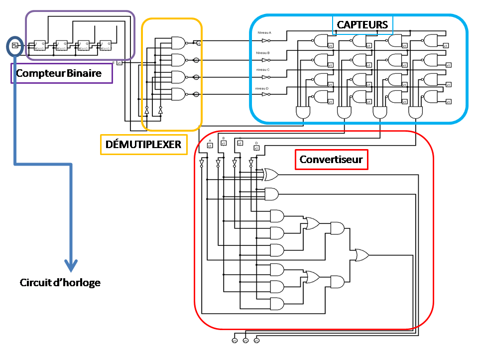

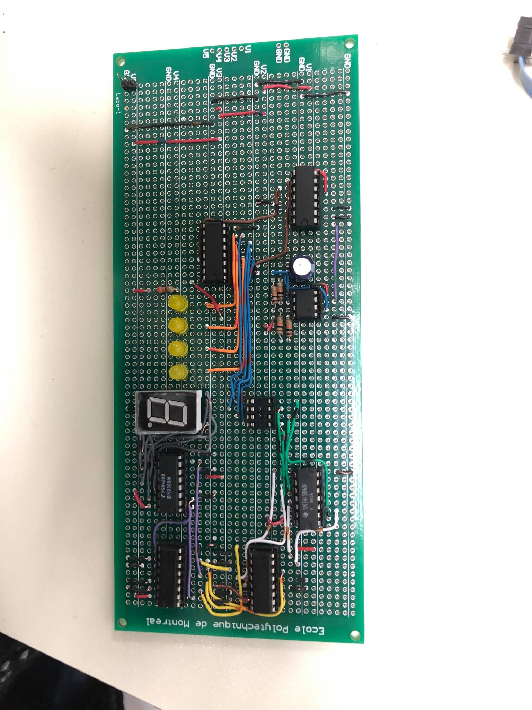
Availability logic
16 places, A1 to D4. Green: available. Gray: occupied.
Browser model of the priority rule, not a timing simulation of the hardware.
Technical notes
The original implementation is hardware logic, so this case study focuses on diagrams and lab evidence rather than presenting unrelated software as its source code.
Academic team project. Design and prototype work were carried out collaboratively.
Archive gallery 26 items

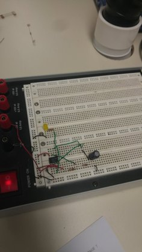

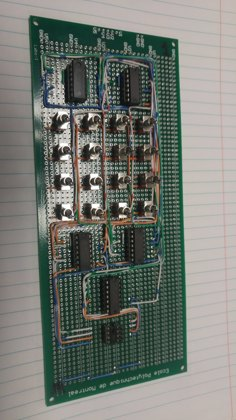

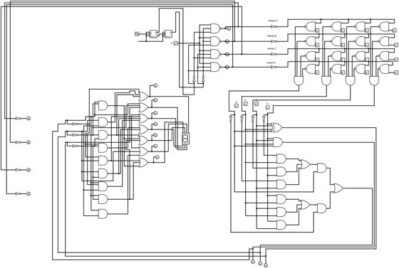

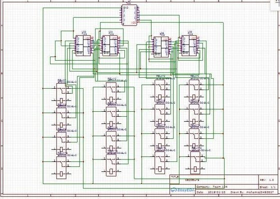

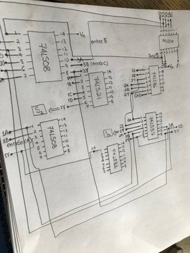

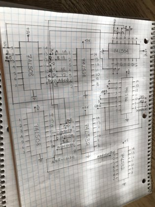

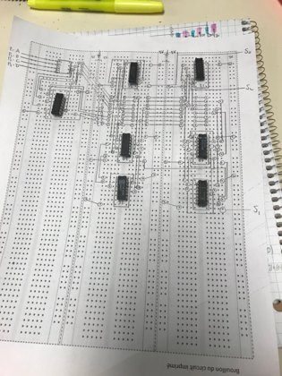

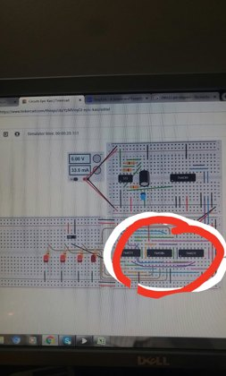

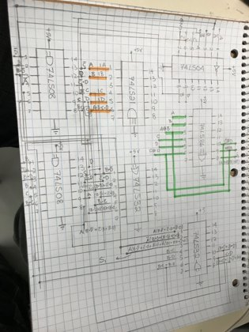

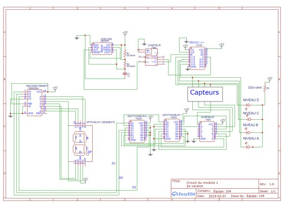

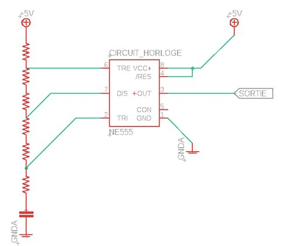

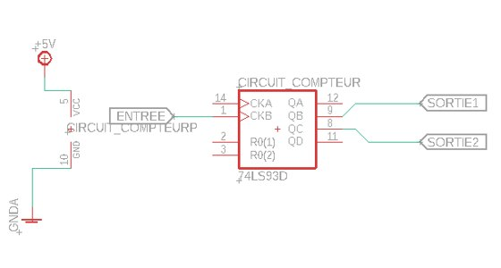

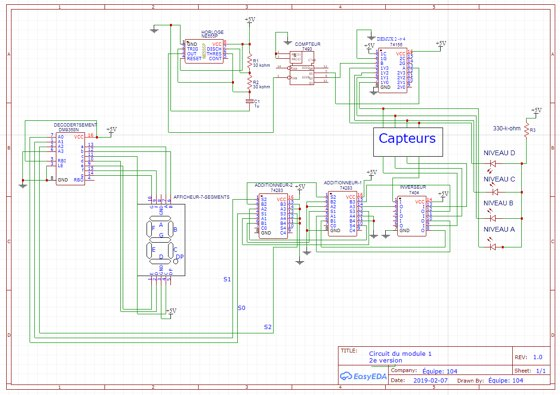

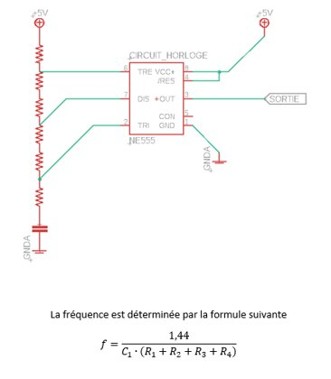

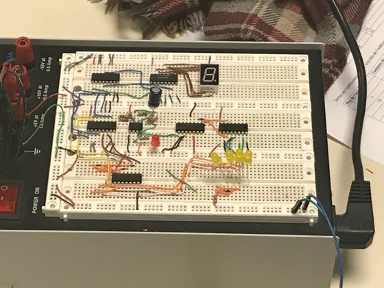

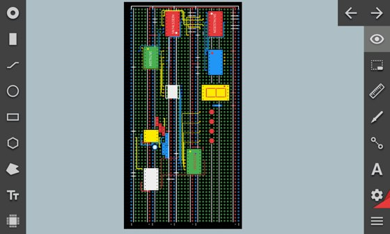

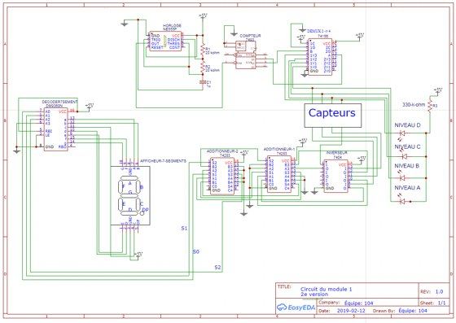

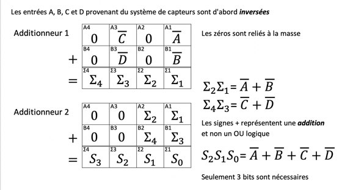

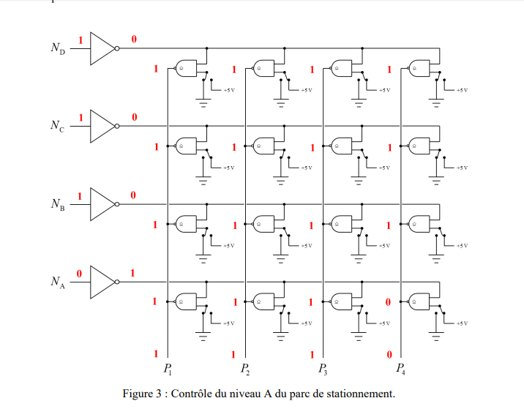

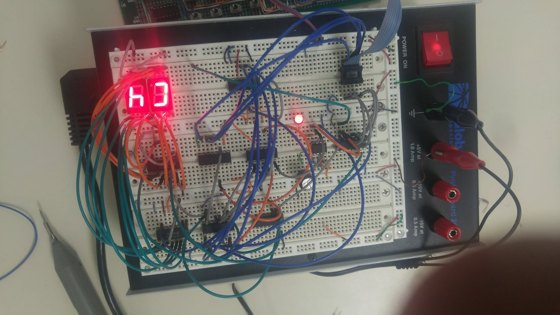

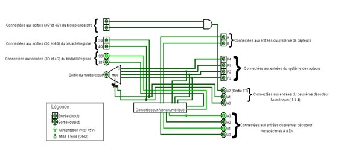

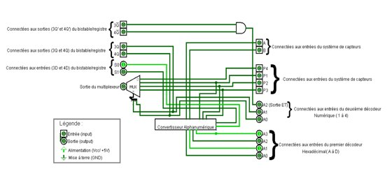

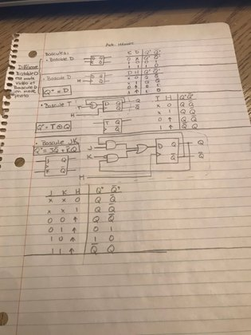

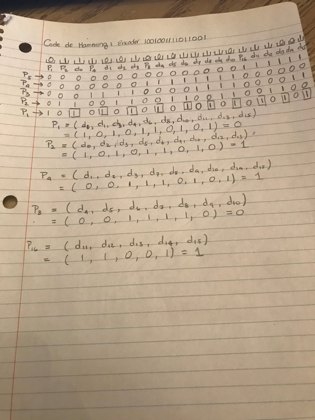